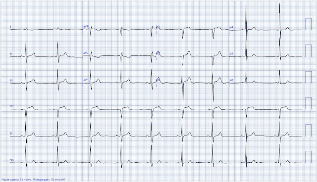
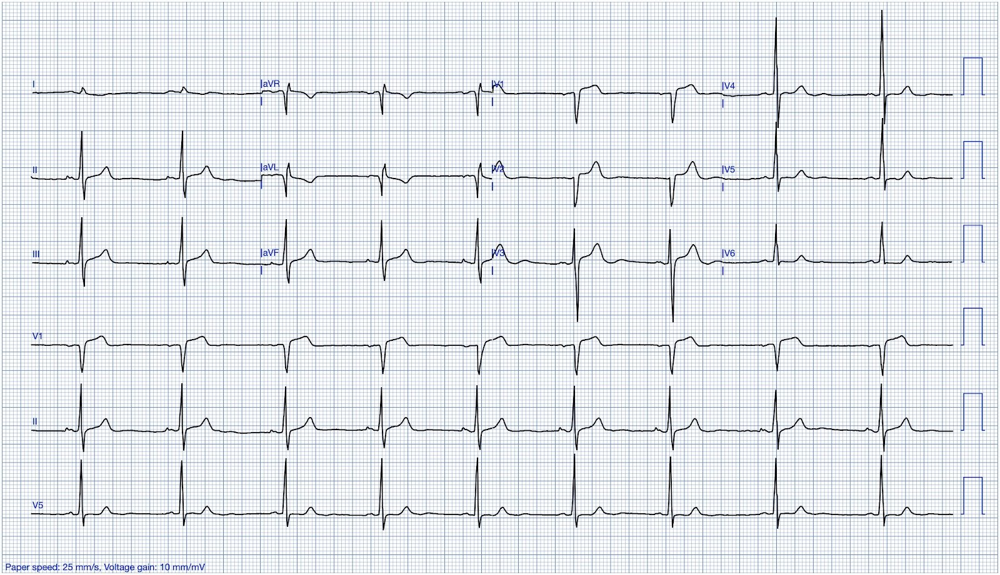
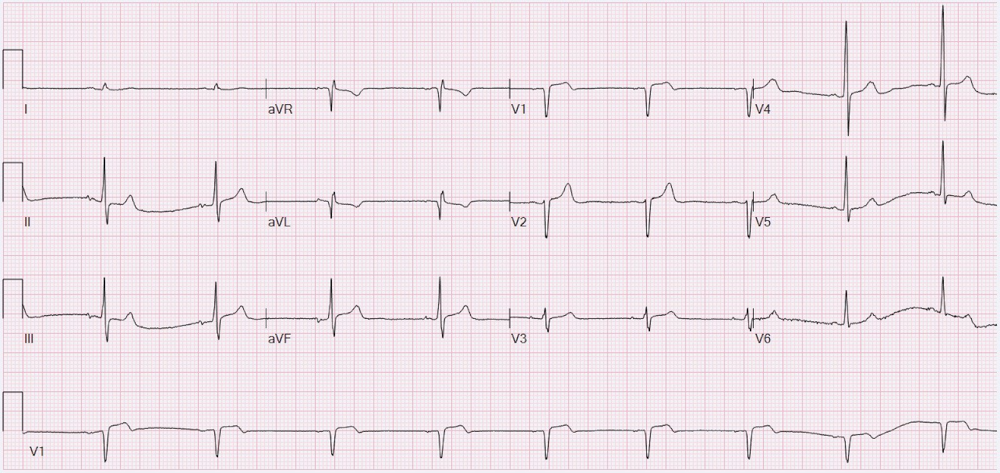
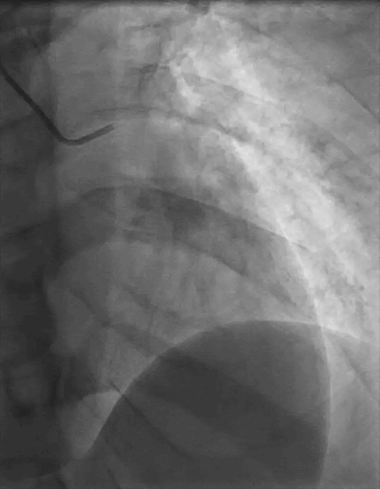
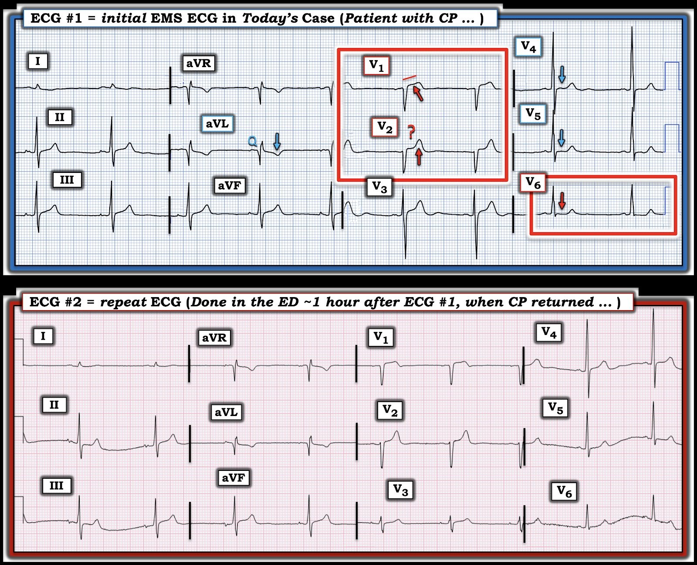

01/07/2025 — Một điện tâm đồ kín đáo và một phim chụp mạch vành kín đáo
Bản dịch tiếng Việt của bài "A subtle ECG and a subtle angiogram" – Dr. Smith’s ECG Blog. Giữ nguyên toàn bộ 5 hình ảnh và 1 video của bản gốc.


Tác giả: Willy Frick
Một người đàn ông ngoài 40 tuổi, không có tiền sử bệnh lý, khởi phát đột ngột đau ngực dữ dội kiểu bóp nghẹt và khó thở. Cơn đau ngực lan xuống cánh tay trái, kèm tê đầu ngón tay. Anh đánh giá mức đau 10 trên 10. Anh đã uống aspirin 325 mg và gọi đội cấp cứu ngoài viện (EMS). Báo cáo của EMS mô tả anh vã mồ hôi, da lạnh ẩm và vô cùng lo âu. Điện tâm đồ của anh được trình bày dưới đây.
Điện tâm đồ 1


Bạn nghĩ gì?
Queen of Hearts đánh giá bản ghi này là âm tính với OMI, nhưng giá trị đầu ra thô là 0,48. Đầu ra của mô hình nằm trong khoảng từ 0 đến 1, trong đó 0 là không có bằng chứng OMI và 1 là độ tin cậy tối đa về OMI. Ngưỡng dương tính là 0,5. Vì vậy 0,48 cực kỳ sát với dương tính, và chỉ cần vài thay đổi nhỏ trong quá trình số hóa cũng có thể đẩy giá trị này lên trên 0,5. Ở một bệnh nhân có bệnh sử điển hình của OMI (tức là xác suất tiền nghiệm rất cao), kết quả này hoàn toàn không đáng yên tâm.
Smith: thực ra, ngưỡng 0,48 có độ nhạy 53% và độ đặc hiệu 98,9% trong một quần thể có tỷ lệ mắc OMI là 2%.
____
Mới: Ứng dụng PMcardio for Individuals 3.0 nay đã có mô hình Queen of Hearts mới nhất và khả năng giải thích của AI (bản đồ nhiệt màu xanh lam)! Tải ngay cho iOS hoặc Android. (Dr. Smith là cổ đông của Powerful Medical.)
____
Đây là một điện tâm đồ khó, nhưng khi đã biết bệnh sử, tôi diễn giải là xoáy trước tim (precordial swirl). Cụ thể, có ST chênh lên (STE) kèm sóng T tối cấp ở V1, cùng ST chênh xuống (STD) dẹt, dốc xuống rất kín đáo ở V6. Các sóng T ở chuyển đạo dưới cũng khá lớn, kèm hình ảnh có vẻ là ST chênh xuống soi gương ở các chuyển đạo bên cao và sóng T thiếu máu cục bộ dạng xuống-lên (down-up), đặc biệt ở chuyển đạo I.
Hồ sơ ghi rằng triệu chứng đã “đỡ hơn” trong 15 phút trước khi đến viện, nhưng không ghi là triệu chứng đã HẾT. Đau ngực do thiếu máu cục bộ hoặc là đã hết, hoặc là chưa hết. “Đỡ hơn” gần như vô nghĩa. Troponin I độ nhạy cao (hsTnI) ban đầu là 5 ng/L (tham chiếu < 35 ng/L). Bệnh nhân không được dùng nitro.
Lần cập nhật tiếp theo, một giờ sau, ghi rằng anh đau ngực trở lại, nên được ghi lại điện tâm đồ, trình bày dưới đây.
Điện tâm đồ 2


Nhìn chung, trông khá giống nhưng có lẽ cải thiện đôi chút. Đến thời điểm này điện tâm đồ không còn quan trọng nữa, vì bệnh sử về cơ bản đã đủ để chẩn đoán OMI. Và ở một bệnh nhân có triệu chứng ngắt quãng (stuttering), chụp mạch vành cấp cứu là cách xử trí phù hợp. Bác sĩ tim mạch khuyến nghị nitroglycerin, nhưng có vẻ là không được dùng. hsTnI lần sau tăng từ 5 ng/L lên 64 ng/L.
Hồ sơ ghi nhận triệu chứng tái phát hai giờ sau đó. Không rõ điều gì đã xảy ra trong đợt có triệu chứng trước đó. Điện tâm đồ ghi lại rất giống, và bệnh nhân được dùng 0,4 mg nitroglycerin ngậm dưới lưỡi với cơn đau “cải thiện”. hsTnI lần ba có kết quả 269 ng/L. Đến lúc này, anh được chẩn đoán “NSTEMI” và bắt đầu truyền heparin liên tục.
Vài giờ sau nữa, bệnh nhân lại tái phát triệu chứng và được dùng thêm hai liều nitroglycerin ngậm dưới lưỡi với mức “cải thiện nhẹ”. hsTnI có kết quả 1013 ng/L. Lúc này là nửa đêm. Bác sĩ tim mạch can thiệp trực khuyến nghị thông tim vào buổi sáng. Sự đi chệch rõ rệt khỏi cách xử trí được guideline khuyến cáo (chụp mạch vành ngay đối với đau ngực kháng trị với điều trị nội khoa) phản ánh thực hành thường quy trong thế giới thực. Cứ khoảng 15 bệnh nhân đau thắt ngực kháng trị thì có 1 người được điều trị theo đúng guideline.
Ngày hôm sau, bệnh nhân được chụp mạch vành. Anh là ca thứ hai trong ngày hôm đó, sau một thủ thuật chương trình của bệnh nhân ngoại trú. (Vội làm gì với một NSTEMI?) Thời gian từ cửa đến chụp mạch vành của anh là 13 giờ 54 phút.
Dưới đây là một góc chiếu được chọn từ phim chụp mạch vành của anh. Dấu hiệu chẩn đoán có thể thấy được ở đây. Bạn thử xem có tìm ra không. (Tôi đã bỏ sót nó cho đến khi được chỉ ra.)
Video: Chụp mạch vành góc chiếu AP Cranial


Đây là video có lời thuyết minh giải thích phim chụp mạch vành:
Video: Phim chụp mạch vành góc chiếu AP Cranial ở trên, nay có quay chậm và dừng hình.
Cá nhân tôi chưa từng gặp OMI đơn độc ở nhánh xuyên vách (septal perforator) trước đây. Nhưng điều này hoàn toàn hợp lý khi đối chiếu với dấu hiệu xoáy trước tim trên điện tâm đồ 1. Xoáy cho thấy một vectơ tổn thương hướng sang phải (vì vách nằm lệch phải so với phần lớn khối cơ thất trái). Tổn thương này được đánh giá là không phải đích phù hợp để làm PCI. Cá nhân tôi chưa từng thấy can thiệp vào nhánh xuyên vách, nhưng tôi tìm được một vài báo cáo ca bệnh. Việc này cực kỳ hiếm khi được thực hiện vì nhiều lý do (khó khăn về kỹ thuật, mạch có khẩu kính nhỏ hơn, stent chịu ứng suất cơ học do mạch chạy trong cơ tim, v.v.). Anh được điều trị bằng liệu pháp kháng tiểu cầu kép.
hsTnI đạt đỉnh 22.286 ng/L và siêu âm tim cho thấy LVEF 49% kèm vô động vách.
Bàn luận
Thứ nhất, một ca bệnh thật thú vị! Tôi đã hỏi một số bác sĩ tim mạch giàu kinh nghiệm, và không ai trong số những người tôi hỏi từng gặp nhồi máu đơn độc ở nhánh xuyên vách. Các mạch vành còn lại về cơ bản bình thường trên phim chụp mạch, ngoại trừ dòng chảy chậm (đánh giá chủ quan), có thể gợi ý rối loạn chức năng vi mạch. Vì vậy, nguyên nhân của nhồi máu không hoàn toàn rõ ràng. Nứt vỡ mảng xơ vữa kinh điển có lẽ là cách giải thích có khả năng cao nhất về mặt thống kê, nhưng sẽ hơi bất thường khi các mạch còn lại của anh không có mảng xơ vữa nào. (Tuy nhiên, ở bệnh nhân có tái cấu trúc dương tính (positive remodeling), bệnh động mạch vành (CAD) có thể không gây hẹp lòng mạch, khiến nó về cơ bản vô hình trên chụp mạch vành xâm lấn.) Thuyên tắc cũng có thể xảy ra, dù không thấy nguồn thuyên tắc rõ ràng.
Thứ hai, thật đáng tiếc khi anh bị chụp mạch vành muộn như vậy. Trong ca này, sự chậm trễ CÓ THỂ đã không làm thay đổi kết cục của anh vì không có can thiệp nào được thực hiện. Nhưng cũng có thể đã làm được điều gì đó hữu ích nếu chụp mạch vành sớm hơn 13 giờ. Có lẽ lúc đó đã có thể hút được một huyết khối lớn. Không thể biết mọi thứ đã thay đổi thế nào khi anh hoàn tất quá trình nhồi máu trong bệnh viện.
Smith: còn có khả năng điều trị tiêu sợi huyết nếu chẩn đoán được đưa ra nhanh chóng bằng chụp mạch vành
Quan trọng hơn, việc không có can thiệp nào được thực hiện không có nghĩa là trì hoãn chụp mạch vành là hợp lý TRƯỚC KHI biết được thông tin đó. Đây hoàn toàn có thể là một tổn thương LAD đoạn gần.
Nhưng dễ hiểu vì sao những ca như thế này lại củng cố định kiến của các bác sĩ. Lại thêm một NSTEMI mà việc trì hoãn thông tim dường như không ảnh hưởng đến kết cục cuối cùng. Đó là cách một “tín đồ” STEMI nghĩ về nó. Và trong thế giới STEMI, đây được xem là chăm sóc bình thường. Không có cách nào để ca này bị đánh dấu là một thất bại của hệ thống nhằm cải tiến quy trình. Mặc dù anh bị nhồi máu diện rộng (với triệu chứng điển hình), mất vách, và bị giảm LVEF.

===================================
BÌNH LUẬN CỦA TÔI, bởi KEN GRAUER, MD (14/6/2025):
===================================
Ca minh họa hôm nay của Dr. Frick có một điện tâm đồ ban đầu kín đáo — và một phim chụp mạch vành cũng kín đáo không kém. Song song đó là những Bài học bổ sung cần rút ra, nằm trong phần bàn luận sâu sắc của Dr. Frick. Tôi tập trung vào điện tâm đồ ban đầu — và bổ sung một lời nhắc đơn giản về điều có thể đã (và lẽ ra phải) giúp đẩy nhanh việc thông tim trong ca hôm nay.
- Để rõ ràng, trong Hình 1 — tôi trình bày lại 2 điện tâm đồ của ca hôm nay.
Điện tâm đồ Ban đầu của EMS hôm nay:
Bệnh nhân trong ca hôm nay là một người đàn ông ngoài 40 tuổi, trước đó khỏe mạnh, đến khoa cấp cứu (ED) với CP “bóp nghẹt” mức 10/10 (Đau Ngực – Chest Pain) lan xuống cánh tay trái.
- Như chúng tôi thường nhấn mạnh — bệnh cảnh lâm sàng này ngay lập tức xếp bệnh nhân vào nhóm nguy cơ cao hơn có khả năng đang có một biến cố tim cấp (và đồng thời phải hạ thấp “ngưỡng” kích hoạt phòng thông tim của chúng ta).
Như Dr. Frick đã nêu — điện tâm đồ #1 gợi ý mạnh “Xoáy” trước tim (Precordial Swirl) (Xem bài ngày 15 tháng Mười năm 2022 trên Dr. Smith’s ECG Blog với 20 ví dụ về Xoáy hoặc các trường hợp “Trông giống” Xoáy — và Bình luận của tôi ở cuối trang để có phần tổng hợp lâm sàng về cách chẩn đoán Xoáy trên điện tâm đồ).
- Nhịp trong điện tâm đồ #1 là nhịp chậm xoang với tần số ngay dưới 60/phút — các khoảng bình thường — trục mặt phẳng trán thẳng đứng — và không có lớn buồng tim.
- “Mắt” tôi lập tức bị thu hút vào 3 chuyển đạo trong các hình chữ nhật ĐỎ. Dù kín đáo — có hiện tượng ST thẳng đuỗn ở đoạn khởi đầu ST tại chuyển đạo V1, với ST chênh lên tại điểm J hơn 1 mm một chút ở chuyển đạo này. Với sóng S khá nông ở V1 trên bệnh nhân có CP mới, bóp nghẹt mức 10/10 — “hình ảnh” ST-T này ở chuyển đạo V1 chắc chắn là bất thường (và cần được khắc sâu vào não của mọi nhân viên y tế cấp cứu).
- Chuyển đạo V2 “trông” lạ (vì thế tôi thêm dấu ? vào Hình 1). Tức là — điểm J chênh lên — rồi bản thân đoạn ST dẹt, theo sau là một sóng T cao không tương xứng nếu xét đến sóng S khá nông ở chuyển đạo này. Dù hình dạng hơi kỳ quặc — phức bộ QRST ở chuyển đạo V2 ủng hộ nhận định của chúng tôi về một biến cố thành trước cấp cho đến khi chứng minh được điều ngược lại.
- Như đã nhấn mạnh qua nhiều ví dụ và phần tóm tắt của tôi trong bài ngày 15 tháng Mười năm 2022 — thực thể “Xoáy” trước tim ( = tắc cấp LAD đoạn gần) được nhận ra ở bệnh nhân có CP mới nhờ ST chênh lên bất thường ở các chuyển đạo V1,V2 — ở bệnh nhân không có LVH nhưng biểu hiện đoạn ST dẹt (hoặc dạng lõm) và chênh xuống ở chuyển đạo V5 và/hoặc V6 (được đánh dấu bằng các mũi tên ĐỎ và XANH LAM ở các chuyển đạo này trong Hình 1).
ĐIỀU CỐT LÕI: Dù mức ST chênh lên ở các chuyển đạo trước là vừa phải trong Hình 1 — khi đi kèm với ST chênh xuống dẹt rõ ràng mà ta thấy ở các chuyển đạo ngực bên của bệnh nhân có CP 10/10 mới này — điện tâm đồ EMS ban đầu hôm nay có giá trị chẩn đoán OMI LAD đoạn gần cấp cho đến khi chứng minh được điều ngược lại. Phòng thông tim lẽ ra phải được kích hoạt ngay lập tức khi nhìn thấy điện tâm đồ #1.
- Không cần trì hoãn việc ra quyết định để chờ nồng độ Troponin (nhớ rằng 1–2 lần Troponin đầu tiên có thể bình thường dù đang có OMI cấp).
- Với bệnh sử của ca hôm nay và các dấu hiệu đã mô tả ở trên trên điện tâm đồ #1 — về cơ bản không có gì có thể xảy ra (về điện tâm đồ, Troponin hay siêu âm tim) làm thay đổi nhu cầu thông tim sớm ở bệnh nhân này. Vậy TẠI SAO phải chờ?
- Các dấu hiệu khác trên điện tâm đồ #1: Ngoại trừ chuyển đạo aVL — các chuyển đạo chi trên bản ghi ban đầu hôm nay đóng góp rất ít cho việc diễn giải. Thú thật — tôi không biết diễn giải thế nào về sóng Q lớn và sóng T đảo ngược ở chuyển đạo aVL khi không có hình ảnh tương tự ở chuyển đạo bên cao còn lại ( = chuyển đạo I). Có lẽ sóng T đảo ngược ở aVL này phản ánh một phần tái tưới máu, có thể liên quan đến hình dạng bất thường của ST-T ở chuyển đạo V2?


================================
Xem kỹ Trình tự các Sự kiện …
Như Dr. Frick đã nêu — hồ sơ bệnh án gợi ý rằng triệu chứng của bệnh nhân này “đã đỡ hơn” trong 15 phút tiếp theo sau khi ghi điện tâm đồ #1, trong lúc xe EMS đang trên đường đến bệnh viện.
- Điểm MẤU CHỐT: Đặc biệt là cho đến khi có quyết định dứt khoát về việc có kích hoạt phòng thông tim hay không — cần ghi lại điện tâm đồ mỗi khi có bất kỳ thay đổi nào trong tình trạng lâm sàng của bệnh nhân. Nếu không thể ghi lại điện tâm đồ trong lúc vận chuyển (tức là khi EMS đang khẩn trương đưa bệnh nhân đến bệnh viện) — thì ngay khi bệnh nhân đến khoa cấp cứu — cần ghi lại điện tâm đồ. Có vẻ việc này đã không được thực hiện.
- Phải đến khoảng 1 giờ sau điện tâm đồ EMS ban đầu thì việc CP của bệnh nhân tái phát mới thúc đẩy ghi điện tâm đồ thứ 2 ( = bản ghi lại ở nửa dưới của Hình 1).
- Tôi thấy rằng so sánh từng chuyển đạo giữa điện tâm đồ #1 và điện tâm đồ #2 về cơ bản không có thay đổi.
Điểm lại Trình tự các Sự kiện:
- Điện tâm đồ EMS ban đầu ( = điện tâm đồ #1, do EMS ghi tại hiện trường khi bệnh nhân đang đau ngực mức 10/10) — gợi ý “Xoáy” trước tim, dù các thay đổi điện tâm đồ khá kín đáo.
- Trong 15 phút tiếp theo — CP của bệnh nhân giảm (dù chúng ta không biết CP giảm bao nhiêu — hay đã hết hoàn toàn chưa). Nhưng không ghi lại điện tâm đồ vào thời điểm này.
- Phải đến khoảng 45 phút sau, khi CP của bệnh nhân “tái phát” — mới ghi điện tâm đồ thứ 2. So sánh điện tâm đồ thứ 2 này với điện tâm đồ EMS ban đầu không cho thấy thay đổi đáng kể.
LƯU Ý: So sánh giữa điện tâm đồ #1 và điện tâm đồ #2 không cho thấy thay đổi ST-T đáng kể. Nhưng bệnh nhân đang đau ngực vào thời điểm ghi cả hai điện tâm đồ này.
CÂU HỎI:
- Một điện tâm đồ ghi lại khoảng 15 phút sau điện tâm đồ #1 sẽ cho thấy điều gì, khi xét rằng lúc đó CP đã giảm?
TRẢ LỜI:
Chúng ta không biết điện tâm đồ ghi lại có thể đã cho thấy gì NẾU nó được ghi khoảng 15 phút sau điện tâm đồ #1, khi CP đã giảm.
- Nếu tái thông tự phát động mạch “thủ phạm” là lý do khiến CP của bệnh nhân này giảm — có thể chúng ta đã thấy các bất thường ST-T vốn rõ trên điện tâm đồ #1 cải thiện đáng kể.
- Và — NẾU tắc lại tự phát động mạch “thủ phạm” là lý do khiến CP của bệnh nhân tái phát khoảng 45 phút sau — điều này có thể giải thích hình ảnh của điện tâm đồ #2 được ghi khi CP tái phát.
QUAN ĐIỂM CỦA TÔI: Tôi hoàn toàn đồng ý với Dr. Frick rằng CP “cải thiện” không giống với CP “đã hết” xét từ góc độ thiếu máu cục bộ (vì chừng nào còn một mức CP nào đó ở bệnh nhân có thay đổi điện tâm đồ mới — thì vẫn đang có thiếu máu cục bộ, cần thông tim sớm kèm PCI để khôi phục dòng chảy mạch vành).
- Dù vậy — vì nhân viên y tế đã không bố trí thông tim sớm sau khi ghi được điện tâm đồ #1 có giá trị chẩn đoán — việc chứng minh được các thay đổi ST-T “động” tương ứng với sự thay đổi về mức độ nặng tương đối của triệu chứng có lẽ đã khả thi NẾU một điện tâm đồ ghi lại được thực hiện khoảng 15 phút sau điện tâm đồ #1, khi CP của bệnh nhân đã “giảm”.
- Chính vì lý do này mà tôi ủng hộ việc ghi chú thường quy ngay trên bản điện tâm đồ về sự hiện diện và mức độ nặng tương đối của CP, như một nguồn thông tin bổ sung sâu sắc giúp xác định trên lâm sàng tình trạng có khả năng của động mạch “thủ phạm” (tức là mở hay đóng) — cũng như để tối ưu hóa cơ hội ghi được các thay đổi ST-T “động“ có thể giúp thuyết phục một bác sĩ can thiệp còn do dự về sự cần thiết phải thông tim sớm kèm PCI.